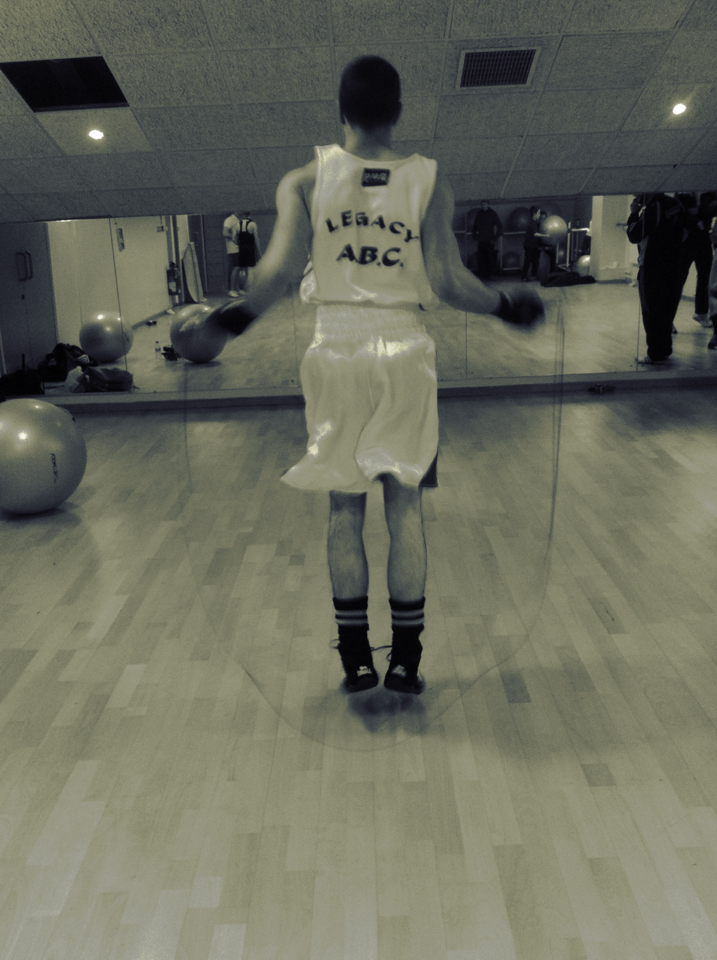
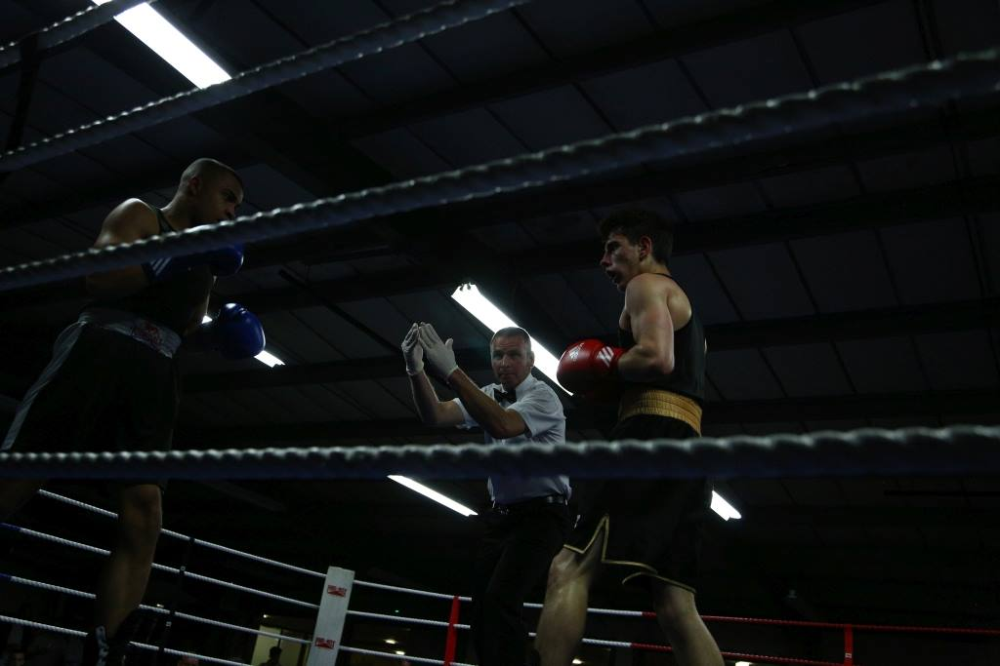
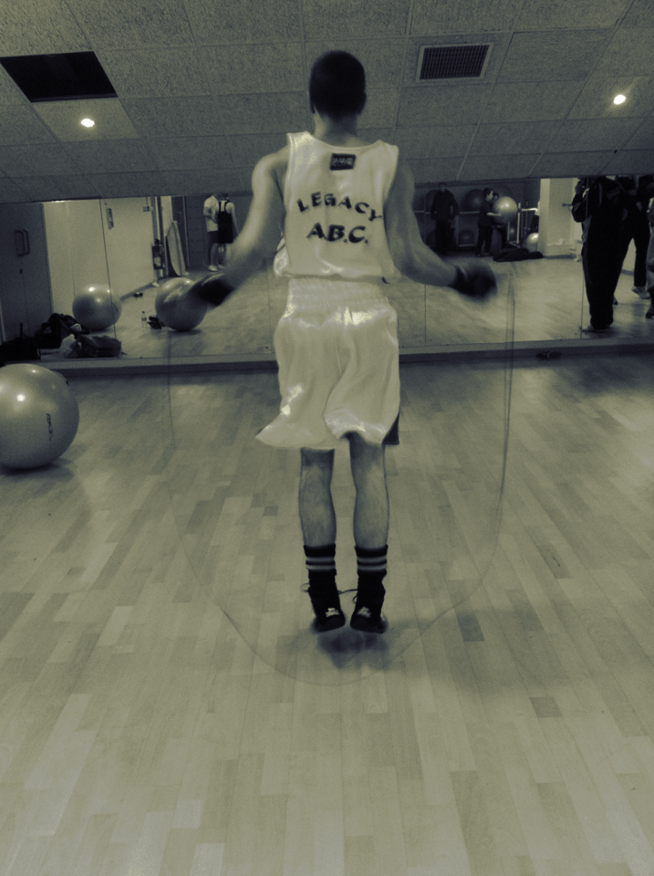
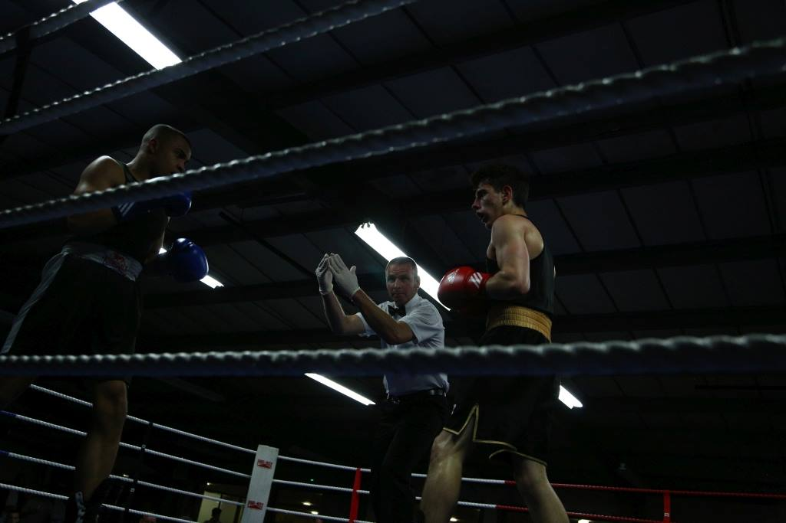

Fight 4 Knowledge
Benefits Of Sport
History teaches us that for those that are socially excluded, and have a talent and a commitment, sport has always offered a way out, an alternative. It seems clear that sport and in particular boxing can play an important role in having an impact in improving persional development physically and mentally.
Sport plays a key role in helping everyone develop and reach their full potential
Flamenco is an artistic expression focusing song "(cante)", dance "(baile)", and musicianship "(touge)". Andalusia in southern Spain is the heartland of Flamenco. "Cante" is the vocal expression of flamenco, the gamut of feelings and states of mind – grief, joy, tragedy, rejoicing and fear – can be expressed through sincere, expressive lyrics characterized by brevity and simplicity. Flamenco ''baile'' is a dance of passion, courtship, expressing a wide range of situations ranging from sadness to joy. The expressive vocal of flamenco makes it great for learning language in an engaging and fun way.
 



Dance
- It's a perfect combination of physical activity, social interaction, and mental stimulation.
- Dancers possess an aura of self-confidence. Your entire mental outlook will take on a fresh sence of creativity, motivation, and energy.
- Dancing lessions are an easy, low-pressure, low-cost way to meet people in a friendley social setting
- You are always surrounded by artistic, cheerful people who make learning a fun and rewarding experiance.